Mother's Wood-Burning Almanac
A compendium of useful knowledge, including which wood's best, splitting tools, how to split wood, wood fuel value and splitability chart, what to look for in a chain saw, wood cords and piles.
By the Mother Earth News editors
September/October 1987
From forest to fireplace: a compendium of useful knowledge.
From the crash of a newly felled tree in the woods to the first weak fingers of flame in a newly lit fire back home; from the resounding hollow "whomp" of a maul busting rounds to the deep, radiant warmth of a roaring stove; from the fundamental security of a well-built woodpile to the pioneer's pride in working for your home's heat - wood burning offers a continually fulfilling sequence of basic rural pleasures.
Getting wood in is work, hard work, lots of work, sometimes dangerous work. Turning cords of standing timber into stove pans of ash is far more time- and labor-consuming than turning up a thermostat dial with your thumb and forefinger.
But for millions of Americans, the rewards far outweigh the effort expended. Consider: A wood-burning home has a true hearth, a center of warmth that pulls family and friends together during the cold winter months. The task of gathering wood is exercise with a purpose - each billet you heft will serve your family. Last, getting heat from trees directly connects you to the natural world, just as harvesting fresh corn connects the gardener and bagging a winter's worth of venison bonds the hunter.
Recently we at MOTHER got to read some wonderful testaments to the allure of wood burning. It happened when we sat down to judge the "Great Woodpile Contest" announced last fall (in No. 102). Oh, we'd expected that the dozens of entries we received would be varied-in fact, they included everything from a dome-stacked children's playhouse in British Columbia to a Minnesoto yard containing 135 (!) stacked cords. But we were surprised by the deep affection often expressed by people for their hills and walls of cordwood.
The enthusiasm of these wood stackers inspired us to do some extra word stacking of our own. In their collective honor, we have created the following special section, "MOTHER's Wood-burning Almanac." These pages both announce the winners of our competition and share a four-cord pile of useful wood-burning lore - to help us all heat our homes for winters to come.
May your woodshed always be full and all your kindling dry.
Poplar gives a bitter smoke,
Fills your eyes and makes you choke.
Apple wood will scent your room
With an incense like perfume.
Oaken logs, if dry and old,
Keep away the winter's cold.
But an ash wet or ash dry
A king shall warm his slippers by.
-Anonymous
WHICH WOOD'S BEST?
It's a volatile question, this matter of "best" firewood, one that has kindled fiery debate among wood burners for centuries. The wood one person swears by is sure to be the wood another person swears at.
Truth be told, there is no clear best. Ounce for ounce and pound for pound, any given kind of firewood delivers virtually the same amount of heat as any other kind. A pound of pine, a pound of hickory, a pound of poplar, a pound of willow - each, properly seasoned, will produce about 7,000 BTU. It's density that makes a difference: An armload of pine weighs less than an armload of hickory, and thus yields less heat. The denser the wood, the higher the fuel value, and the higher the fuel value, the fewer trips you have to make to the woodbox to carry in an evening's warmth.
So goes conventional wood-burning lore. But BTU are only one measure of a wood's worth. Each species offers its own unique combination of properties: ease (or difficulty) of splitting, ash content, aroma, seasoning time, flame size, tendency to smoke or throw sparks. Black ash burns nicely but only after a long period of seasoning. White ash needs little seasoning. Rock elm ranks high in heat value but is hard (some say impossible) to split. Aspen and balsam poplar split easily but throw off a lot of smoke.
RELATIVE FUEL VALUE
High
21 to 26 Million BTU per Cord
Apple
Beech, American
Beech, blue (American hornbeam)
Birch, black
Birch, yellow
Dogwood
Hickory
Ironwood (hardhack, hop hornbeam)
Locust, black
Maple, sugar
Oak, black
Oak, red
Oak, white
Osage orange
Persimmon
Serviceberry, downy (shadbush)
Medium
17 to 20 Million BTU per Cord
Ash, black
Ash, green
Ash, white
Birch, gray
Birch, white
Cherry, black
Elm, American
Fir, Douglas
Locust, honey
Maple, red
Maple, silver
Pine, longleaf (Southern yellow)
Pine, red (Norway pine)
Sweet gum (red gum)
Sycamore, American
Tamarack (Eastern larch)
Tupelo, black (black gum)
Walnut, black
Low
11 to 16 Million BTU per Cord
Aspen, bigtooth
Aspen, quaking
Basswood
Box-elder
Butternut (white walnut)
Catalpa
Cottonwood
Fir, balsam
Hemlock
Pine, white
Poplar, balsam
Poplar, yellow (tulip poplar)
Spruce, red
Willow, black
Some woods - particularly conifers and other low-density softwoods - burn fast, releasing all their heat in a few fiery moments. Others - notably dense hardwoods such as hickory, oak and ash-burn slowly, holding their coals hot and long. Each can serve a purpose: the quick burners for kindling, for fast heat, for a batch of biscuits on a cookstove; the slow burners for a romantic flickering fireplace or for strong, steady heat in the ole box stove. Likewise, each can be managed to serve the other's function: Split hardwood extra small, and it burns hot and fast. Refuel and tend your stove carefully, and low-density wood makes a perfectly acceptable heating fuel.
Probably the most important factor in choosing the "best" firewood for you is accessibility. Obviously, you're pretty much limited in your choice to whatever woods are available in your area. (Little wonder BTU charts like the one here irritate westerners, who have little access to high-ranked hardwoods and who have always heated their homes just fine, thank you, with such woods as fir, aspen and pine.) If you buy wood for heating your home, it probably pays to spend a little more to get the densest species available in your area. But if you cut and haul your own wood, the less work you can make of it the better. Is that hickory 300 yards off the road - and downhill, meaning you'd have to lug it up - really all that much better than the abundant yellow poplar growing (on level ground, yet) just a hoot 'n' holler from your back door? Also, consider the value of any tree - both monetary and environmental - before you cut. It's often better to thin lowgrade wood from your lot for burning (or better yet, glean downed wood from construction sites and other clearing projects) than to topple healthy high-heat hardwood.
The chart here can serve as a general guide to firewood based on two important considerations: relative heat value and ease of splitting. But don't forget to weigh other factors, and don't hesitate to try whatever woods - including the so-called inferior types-are available to you. In many cases, it's not which wood you use, but how you season and burn it, that's important.
WEDGE-RATED GUIDE TO WOOD "SPLITTABILITY"
KEY
Wood
Ease of Splitting
Wood
Ease of Splitting
Apple
|
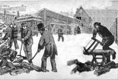 Mike Metz and the ""corb crib."" |
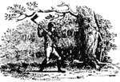 Bill Kiebel's a stickler. |
Putting on a happy face. |
|
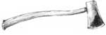 The Palmers' firewood wall. |
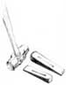 George Boise reaches new heights. |
 Michael Hawkes |
|
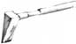 |
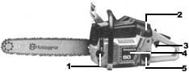 |
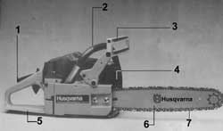 |
|
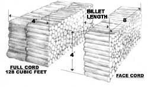 |
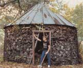 |
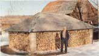 |
|
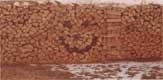 |
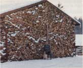 |
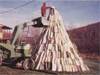 |
|
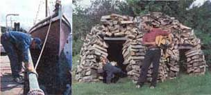 |
|
|